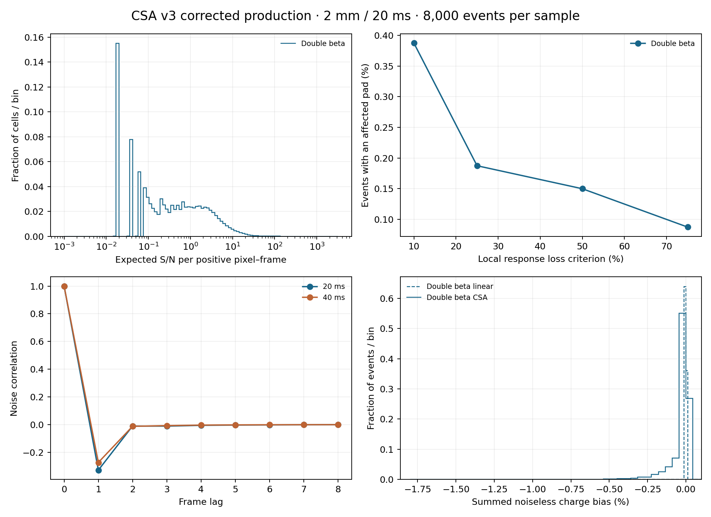

This production contains 8,000 bb0nu events at 2 mm pitch and 20 ms frames. The shared realization places ion drift uniformly between 5 and 145 cm, with complementary electron drift in the 150 cm chamber. Every event ID, primary-pair checksum and drift distance was checked against the existing matched common realization and 4 mm ion file. The electron readout was preserved. All events and signed response buckets are retained. The ion ledger is 897,306,359, exactly equal to the primary-pair total. The CSA used 2,878 nonlinear histories and 8 SPICE fallback histories among 2,232,910 pad histories. Production creates no SPICE control histories. Fresh filtered outputs were asserted before the run; actual circuit-deck, model, kernel-waveform and calibration checksums are saved in preflight.toml. Publication initially failed in the Julia sendfile copy. The oversized temporary was removed after verification of the corrected source. A bounded, checksum-verified copy completed publication with a 10% metadata-growth limit. Numerical timing covers the original calculation; publication recovery and registration are timed separately.
| Stage | Seconds |
|---|---|
| Ion diffusion and collection | 40.5933 |
| Covariance calibration setup | 64.7335 |
| Linear predictions and current preparation | 206.0798 |
| Nonlinear response and storage | 15.2782 |
| SPICE fallback workflow | 465.3983 |
| Three-frame reconstruction and summary | 376.7668 |
| Figures and presentation | 1.2545 |
| Event work excluding calibration and final presentation | 1063.5638 |
| Event work per event | 0.1329 |
| Publication recovery and registration | 200.2122 |
PDF report · Interactive response diagnostics
